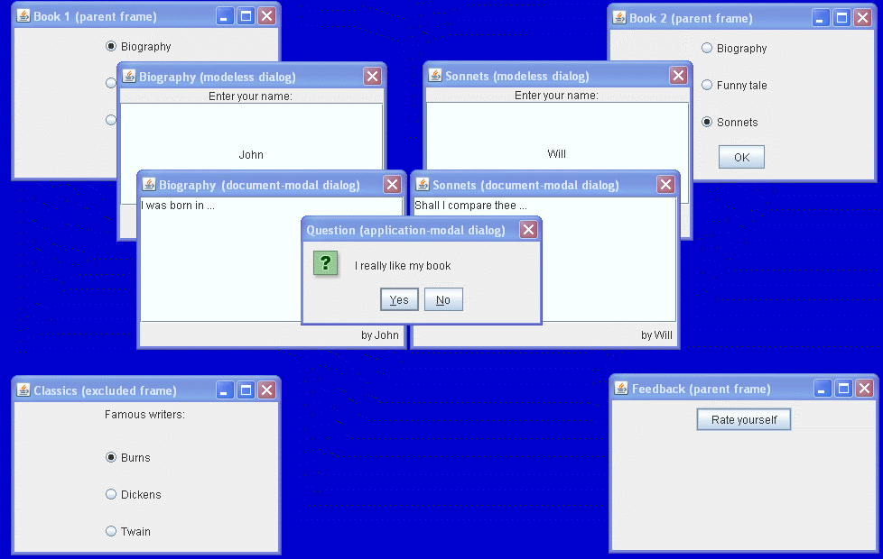

Lección: Usando Otras Características de Swing
Cómo Usar la Modalidad en los Diálogos
Java™ SE 6 ha resuelto los problemas de modalidad que aparecieron en versiones anteriores de la plataforma. El nuevo modelo de modalidad habilita al desarrollador alcance, o limite, el bloqueo de modalidad de un cuadro de diálogo.
Antes de proceder con el nuevo modelo de modalidad, revisemos los siguientes términos:
- Cuadro de Diálogo — Una ventana emergente de nivel superior con un título y un borde que típicamente toma alguna forma de entrada del usuario. Un Cuadro de Diálogo puede ser modal o no modal. Para más información sobre los cuadros de diálogo, vea Una Visión General de los Diálogos en la página Cómo Hacer Diálogos.
- Cuadro de diálogo Modal — Un cuadro de diálogo que bloquea la entrada a alguna de las otras ventanas de nivel superior en la aplicación, excepto para las ventanas creadas con el cuadro de diálogo como su dueño. El cuadro de diálogo modal captura el foco de la ventana hasta que se cierra, usualmente en respuesta a una presión de botón.
- Cuadros de diálogo no modales — Un cuadro de diálogo que le habilita a operar con otras ventanas mientras este cuadro de diálogo se muestra.
En Java SE 6 el comportamiento tanto de los cuadros de dialogo modales como no modales ha sido cambiado de forma que siempre aparecen encima tanto de sus ventanas padre como de todas las ventanas bloqueadas también.
Los siguientes tipos de modalidad son compatibles con Java SE 6:
- Tipo no modal — Un cuadro de diálogo no modal no bloquea ninguna otra venanta mientras está visible.
- Tipo modal-de-documento — Un cuadro de diálogo modal-de-documento bloquea todas las ventanas del mismo documento, excepto las ventanas de sus propia jerarquía de hijos. En este contexto, un documento es una jerarquía de ventanas que comparten un ancestro común, llamado el documento raíz, el cual es la ventana ancestral más cercana sin un propietario.
- Tipo modal-de-aplicación — Un cuadro de diálogo modal-de-aplicación bloquea todas las ventanas de la misma aplicación, excepto las ventanas de su jerarquía hija. Si varios applets son lanzados en un entorno de navegador, se le permite al navegador tratarlos como aplicaciones separadas o como una aplicación singular. Este comportamiento es dependiente-de-la-implementación.
- Tipo modal-de-toolkit — Un cuadro de diálogo modal-de-toolkit bloquea todas las ventanas que se ejecutan en el mismo toolkit, excepto las ventanas de su jerarquía hija. Si varios applets son lanzados, todos ellos se ejecutan con el mismo toolkit. Por lo tanto, un cuadro de diálogo modal de toolkit mostrado desde un applet puede afectar a otros applets y todas las ventanas de la instancia del navegador que incrusta el entorno de tiempo de ejecución de Java para este toolkit.
Adicionalmente, puede configurar el modo de exclusión de modalidad:
-
Modo de exclusión — Cualquier ventana de nivel superior puede ser marcada para que
no sea bloqueda por diálogos modales. Esta propiedad le habilita a configurar el modo de
exclusión modal. La enumeración
Dialog.ModalExclusionTypeespecifica los tipos posibles de exclusión modal.
Nota : El nuevo modelo de modalidad no implementa una modalidad de sistema, el cual bloquea todas las aplicaciones (incluyendo las aplicaciones Java) que se muestran en el escritorio mientras un cuadro de diálogo modal está activo.
El ejemplo ModalityDemo demuestra los tres primeros de los cuatro tipos de modalidad mencionados arriba.

Esta figura ha sido reducidda para que encaje en la página.
Pulse en la imagen para verla en su
tamaño natural.
Pruebe esto:
-
Pulse el botón Lanzar para ejecutar ModalityDemo usando
Java™ Web Start (
descargue KDJ 7 o posterior). Alternativamente, para compilar y ejecutar usted mismos el
ejemplo, consulte el índice de ejmplos.

-
Los siguientes cuadros de dialogo aparecerán:
- Book 1 (marco padre)
- Book 2 (marco padre)
- Feedback (marco padre)
- Classics (marco excluido)
- Cambie al marco Book 1 y elija el título de la Biografía para el libro, entonces seleccione OK.
- El título de la Biografía será visualizado en el título del cuadro de diálogo. Introduza el nombre, por ejemplo - “John”, dentro del campo de texto.
-
Cambie al marco Book 1 y cambie el título a 'Funny Tale', entonces seleccione OK. Ya que el cuadro de
diálogo para introducir el nombre es no modal, usted puede fácilmente cambia a su marco
padre.
Nota : El título del cuadro de diálogo no modal ha cambiado a 'Funny Tale'.
- Seleccione OK en el cuadro de diálogo no modal.
- El cuadro de diálogo modal-de-documento Funny Tale aparece.
- Introduzca algo de texto en el campo de texto. Note que éste está firmado por el nombre que introdujo en el cuadro de diálogo no modal.
- Cambie al cuadro de diálogo no modal e intente cambiar su nombre. No será capaza de hacer eso, porque el cuadro de diálogo modal-de-documento bloquea todas las ventanas en su jerarquía padre.
- Realize la misma secuencia de operaciones (pasos 3 - 9= para el marco padre Book 2.
- Intente cambiar a diferentes cuadros de dialogo. Notará que puede cambiar o al marco Classics o al marco Feedback como también al cuadro de diálogo ya sea del marco Book 1 como del marco Book 2.
- Cambie al marco padre Feedback. Seleccione Rate Yourself.
-
El cuadro de diálogo de confirmación aparecerá. Intente cambiar a diferentes cuadros de dialogo. Usted
sólo está habilitado para cambiar al cuadro de diálogo Classics porque el cuadro de diálogo estándar de
confirmación es un cuadro de diálogo modal-de-aplicación y bloquea todas las ventanas de la misma
aplicación. Sin embargo, notará que puede seleccionar su autor clásico favorito en el marco Classics.
Este marco ha sido creado usando el tipo de exclusión de modalidad
APPLICATION_EXCLUDE, el cual previente que todas las ventanas de nivel superior seran bloqueadas desde cuadros de dialogo modales-de-aplicación.
El siguiente trozo de código muestra cómo crear cuadros de dialogo de tipos diferentes de modalidad:
//El marco padre Book
f1 = new JFrame("Book 1 (parent frame)");
...
//El cuadro de diálogo no modal
d2 = new JDialog(f1);
...
//El cuadro de diálogo modal-de-documento
d3 = new JDialog(d2, "", Dialog.ModalityType.DOCUMENT_MODAL);
...
//El marco padre Book2
f4 = new JFrame("Book 2 (parent frame)");
...
//El cuadro de diálogo no modal
d5 = new JDialog(f4);
...
//El cuadro de diálogo modal-de-documento
d6 = new JDialog(d5, "", Dialog.ModalityType.DOCUMENT_MODAL);
...
//El marco excluido
f7 = new JFrame("Classics (excluded frame)");
f7.setModalityExclusionType(Dialog.ModalExclusionType.APPLICATION_EXCLUDED);
...
//El marco padre Feedback parent y el cuadro de diálogo Confirm
f8 = new JFrame("Feedback (parent frame)");
...
JButton b8 = new JButton("Rate yourself");
b8.addActionListener(new ActionListener() {
public void actionPerformed(ActionEvent e) {
JOptionPane.showConfirmationDialog(null,
"I really like my book",
"Question (application-modal dialog)",
JOptionPane.Yes_NO_OPTION,
JOptionPane.QUESTION_MESSAGE);
}
});
Encuentre el código completo de la demo en el fichero
ModalityDemo.java
.
En Java SE 6 puede crear un cuadro de diálogo modal-de-documento sin un padre. Ya que la clase
Dialog es una subclase de la clase Window, una instancia de Dialog
automáticamente se convierte en raíz del documento si no hay propietario. Por lo tanto, si dicho cuadro de
diálogo es modal-de-documento, su alcance de bloqueo está vacío, y se comporta como si fuera un cuadro de
diálogo no modal.
LA IPA de Modalidad
Los constructores de la clase JDialog le permiten crear cuadros de diálogo de varios tipos de
modalidades.
| Constructor | Propósito |
|---|---|
| JDialog(Dialog propietario) |
Crea un cuadro de diálogo no modal con el Dialog propietario especificado pero sin un
título.
|
| JDialog(Dialog propietario, boolean modal) |
Crea un cuadro de diálogo con el Dialog propietario especificado y modalidad.
|
| JDialog(Dialog propietario, String title) |
Crea un cuadro de diálogo no modal con el Dialog propietario especificado y título.
|
| JDialog(Dialog propietario, String title, boolean modal) |
Crea un cuadro de diálogo con el Dialog propietario especificado, título, y modalidad.
|
| JDialog(Dialog propietario, String title, boolean modal, GraphicsConfiguration gc) |
Crea un cuadro de diálogo con el Dialog propietario especificado, título, modalidad, y
configuración de gráficos.
|
| JDialog(Frame propietario) |
Crea un cuadro de diálogo no modal sin título con el Frame propietario especificado. Si el
valor del propietario es null, un marco cmpartido y oculto será establecido como el propietario del
cuadro de diálogo.
|
| JDialog(Window propietario, String title, Dialog.ModalityType modalityType) |
Crea un cuadro de diálogo con la Window propietaria especificada, título, y modalidad.
|
La siguiente tabla lista los métodos heredados de la clase
java.awt.Dialog
.
| Método | Propósito |
|---|---|
| getModalityType | Devuelve el tipo de modalidad para este cuadro de diálogo. |
| setModalityType |
Establece el tipo de modalidad para este cuadro de diálogo. Vea
ModalityType
para los tipos de modalidad posibles. Si el tipo de modalidad dado no es compatible, entonces se
usa el tipo MODELESS. Para asegurar que el tipo de modalidad ha sido establecido, llame al
método getModalityType() después de llamar a este método.
|
Ejemplos Que Usan la IPA de Modalidad
La siguiente tabla lista los ejemplos que usan modalidad en los diálogos.
| Ejemplo | Dónde Se Describe | Notas |
|---|---|---|
ModalityDemo |
Esta sección | Crea cuadros de dialogo de diferentes tipos de modalidad, demostrando el alcance de bloqueo para esos tipos. |